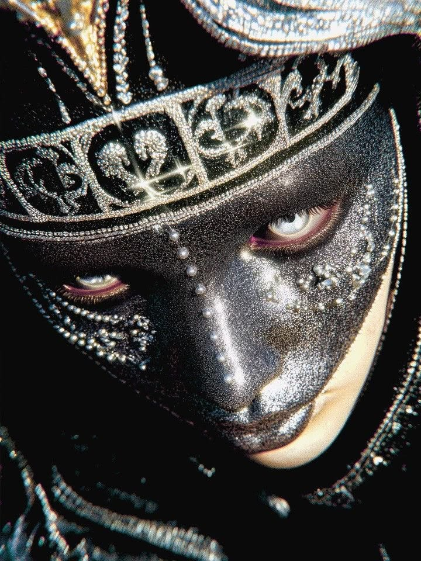

Schiaparelli, le surréalisme sur tapis rouge
Des visages dorés, des bijoux en forme d'organes, des robes qui ressemblent à des sculptures impossibles. Schiaparelli a ramené la haute couture au centre de la conversation. Et son histoire prouve une chose fascinante : un art réputé mourant peut devenir, à l'ère des réseaux, le plus vivant de tous.

L'héritage surréaliste
Elsa Schiaparelli, fondatrice de la maison, dialoguait avec Dalí et Cocteau. Près d'un siècle plus tard, cet esprit est intact : le vêtement comme œuvre d'art, le détail comme provocation. Chez Schiaparelli, on ne s'habille pas, on porte une idée. La couture y redevient un terrain de jeu pour l'imaginaire.
C'est ce qui la distingue dans un paysage où tant de maisons jouent la sécurité. Là où d'autres cherchent le vêtement vendable, elle cherche l'image inoubliable. Chaque défilé est pensé comme une exposition, chaque pièce comme un choc visuel assumé.
Cet héritage n'est pas un poids, c'est un tremplin. En puisant dans l'audace de sa fondatrice, la maison s'est donné une liberté que peu possèdent : celle de tout oser, parce que l'étrange, chez elle, n'est pas un accident mais une tradition.
Le moment tapis rouge
Il suffit d'une robe sur une célébrité pour que le monde entier en parle. Schiaparelli a compris que la couture se joue désormais autant sur les marches que sur les podiums. Une apparition, une photo, et la maison fait le tour de la planète en quelques heures.
Ce déplacement est fondamental. Le vrai défilé n'est plus forcément celui qui se tient dans une salle fermée devant quelques privilégiés, mais celui qui se joue sur les tapis rouges, relayé par des millions d'écrans. La maison l'a compris et conçoit ses pièces pour ce théâtre-là.
La couture à l'ère de l'attention
Il y a quelque chose de profondément moderne dans la stratégie de la maison. Nous vivons dans une économie de l'attention, où la ressource la plus rare n'est ni l'argent ni le talent, mais le regard des gens. Dans ce monde saturé d'images qui défilent en une seconde, seule l'audace arrête le pouce sur l'écran.
Schiaparelli joue ce jeu à la perfection. Ses créations sont pensées pour la capture, le partage, le choc immédiat. Une maison née dans les années 1920 est devenue l'une des plus intelligentes à l'ère des réseaux sociaux. Elle n'a pas trahi son héritage surréaliste : elle a trouvé en notre époque le terrain parfait pour l'exprimer.
C'est une leçon pour toute l'industrie. Beaucoup de maisons prestigieuses peinent à exister dans ce nouveau monde, prisonnières de leur sérieux. Schiaparelli, elle, a compris que la grandeur ne consiste pas à se tenir à distance de l'époque, mais à en épouser les codes sans rien renier de son âme.
L'audace comme seule règle
Dans un monde saturé d'images, seule l'audace se remarque. Schiaparelli ne cherche pas à plaire à tout le monde, elle cherche à marquer les esprits. Et elle a raison : on oublie le joli, jamais le sidérant.
Cette radicalité a un prix. Certaines pièces frôlent la provocation gratuite, d'autres divisent franchement. Mais c'est le jeu assumé d'une maison qui préfère faire parler que faire consensus. Dans la couture, l'indifférence est la seule vraie défaite.
La haute couture a un avenir
Beaucoup la croyaient condamnée, trop chère, trop lente, trop loin du monde. Schiaparelli prouve le contraire. Tant qu'elle ose rêver plus grand que le réel, la couture restera irremplaçable.
Elle rappelle à quoi sert vraiment la mode, au-delà du vêtement : à faire rêver, à repousser les limites du possible, à montrer que l'imagination humaine n'a pas de bornes. La mode copie la rue ; la couture, elle, invente des mondes. Et tant qu'il y aura des maisons pour oser l'impossible, cet art fragile et magnifique aura sa place.
La mode copie la rue, la couture invente l'impossible. Et Schiaparelli rappelle pourquoi on en a besoin.